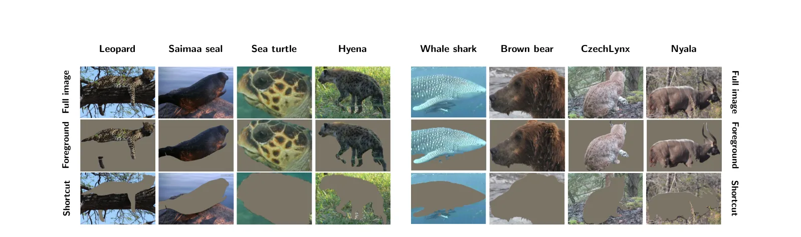
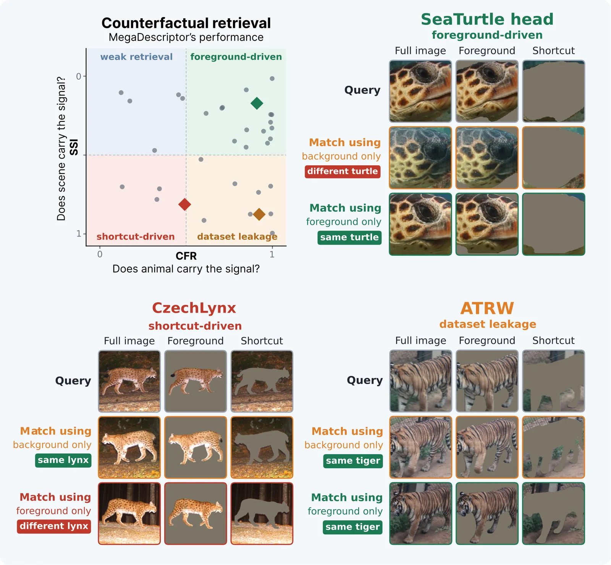

O problema da avaliação oculta
A identificação automática de indivíduos animais evoluiu de estudos curados para benchmarks abertos e modelos fundamentais reutilizáveis. Essa transição trouxe comparabilidade, mas expôs uma fragilidade metodológica fundamental: a avaliação padrão não verifica a evidência por trás de um acerto. Um modelo pode obter alta precisão em recuperação sem usar as características biométricas reais da espécie, como padrões de pelagem ou contornos de barbatanas. Em vez disso, ele pode explorar correlações espúrias, como o fundo da cena, o contexto de captura ou até mesmo sobreposição de conjuntos de dados.
Essa ambiguidade é crítica porque as condições de campo raramente correspondem aos benchmarks controlados. Imagens de campo variam em câmeras, estações e condições de luz. Se um modelo é treinado para usar um fundo específico que correlaciona-se com a identidade, sua precisão no campo cairá drasticamente. A pergunta central não deve ser apenas se o modelo acertou, mas qual evidência visual permitiu esse acerto. Sem essa distinção, métricas de alto nível podem mascarar modelos que são essencialmente 'enganosos' em ambientes reais.
Para resolver isso, os autores propõem o CounterFactual Foreground Retrieval (CFR), um protocolo de avaliação consciente de vazamento de dados. O CFR não substitui a métrica padrão, mas a complementa, desmontando a performance em seus componentes de evidência. Ao avaliar a mesma tarefa de recuperação sob diferentes perspectivas visuais, o protocolo revela se o modelo está aprendendo a biometria do animal ou apenas memorizando o contexto ao redor dele.

Como funciona o CounterFactual Foreground Retrieval
O cerne do método CFR é a criação de três vistas correspondentes para cada imagem no conjunto de dados. A primeira é a imagem completa, usada para medir a performance de recuperação padrão. A segunda é a visão de primeiro plano apenas (foreground-only), onde o fundo é removido, mantendo apenas o animal. Esta vista mede se o modelo consegue recuperar o indivíduo baseado exclusivamente nas características visíveis do animal. A terceira é a visão de atalhos apenas (shortcut-only), onde o animal é removido, deixando apenas o fundo ou a silhueta do corpo. Esta vista mede quanto sinal de identidade é recuperável a partir de evidências que não são a biometria da superfície do animal.
Essa decomposição transforma uma única pontuação de recuperação em um 'perfil de evidência'. O perfil mostra, por exemplo, quão bem o modelo performa nas imagens originais, quanto desse desempenho persiste quando apenas o animal é visível e quanto sinal de identidade permanece recuperável quando o animal é removido. Para espécies cuja identidade é definida pela forma do corpo, como as nadadeiras dorsais de baleias, a silhueta é excluída da métrica de atalhos, pois a forma é a evidência legítima, não um atalho.
O protocolo também introduz o Shortcut Signal Indicator (SSI), uma métrica derivada que quantifica a dependência de atalhos. O SSI mede quanto do sinal de recuperação da imagem completa pode ser recuperado apenas das entradas de atalhos. Um SSI alto indica que o modelo está confiando fortemente em cues contextuais ou na silhueta, enquanto um SSI baixo sugere que a recuperação é suportada genuinamente pelas características do animal. Isso permite distinguir entre modelos que são robustamente baseados no animal e aqueles que são 'superdeterminados', ou seja, funcionam bem, mas por razões enganosas.
Auditoria de modelos existentes
Os autores aplicaram o CFR para auditar modelos de referência, como MiewID e MegaDescriptor, em diversos datasets representativos. Os resultados demonstram que a precisão padrão de recuperação (Retrieval@k) pode esconder perfis de evidência qualitativamente diferentes. Em alguns pares modelo-dataset, a recuperação é fortemente suportada pelo primeiro plano, com alto CFR e baixo SSI. Isso indica que o modelo está aprendendo as características biométricas reais.
Em outros casos, os modelos são superdeterminados. Isso significa que, embora o primeiro plano do animal suporte a recuperação, o fundo ou a silhueta também são altamente preditivos. Essa sobreposição de sinais torna difícil discernir qual é a verdadeira capacidade do modelo sem a análise contrafactual. Em casos ainda mais confusos, a recuperação pode depender quase inteiramente de atalhos, tornando a alta precisão no benchmark uma ilusão de robustez.
Essa auditoria revela que a métrica única de precisão é insuficiente para guiar o desenvolvimento de modelos. Dois modelos podem ter a mesma precisão no teste padrão, mas um pode ser robusto a mudanças de fundo enquanto o outro não. Sem o CFR, essa diferença crítica permanece oculta, levando pesquisadores a otimizarem modelos que podem não generalizar bem para aplicações ecológicas reais.

Infraestrutura e disponibilidade de dados
Para viabilizar essa nova forma de avaliação, os autores atualizaram a biblioteca WildlifeDatasets, transformando-a em um conjunto de benchmarks auditáveis quanto a vazamento de dados. Eles adicionaram uma camada de segmentação e avaliação sobre datasets existentes, disponibilizando máscaras de primeiro plano para aproximadamente 0.5 milhões de imagens de 34 datasets diferentes. Além disso, o código para geração de máscaras e avaliação do CFR foi liberado publicamente.
Essa infraestrutura é crucial porque a geração de máscaras precisas é um gargalo para a avaliação rigorosa. Ao fornecer máscaras prontas, os autores permitem que a comunidade teste se a recuperação é suportada por evidência visível do animal, contexto de fundo ou cues de silhueta. Anteriormente, apenas a recuperação de imagem completa era reportada, o que tornava impossível detectar se um modelo estava usando atalhos. Agora, a comunidade tem as ferramentas para auditar vazamentos e a robustez real dos modelos.
A disponibilidade dessas máscaras e do código de avaliação estabelece um novo padrão para benchmarks em visão computacional aplicada à biologia. Ela força os pesquisadores a considerarem não apenas a precisão, mas a integridade da evidência usada pelo modelo. Isso é particularmente importante em domínios onde a generalização para condições variáveis é essencial para a utilidade prática.
Resultados da auditoria em tabelas
A análise detalhada dos resultados, apresentada nas tabelas do paper, compara o desempenho de modelos como MiewID e MegaDescriptor em datasets selecionados. Os dados mostram claramente que a precisão padrão (Retrieval@1) esconde diferentes perfis de evidência. Alguns datasets são limpos, sendo fortemente suportados pelo primeiro plano, enquanto outros são superdeterminados, dependendo de atalhos.
Esses resultados quantitativos validam a necessidade do CFR. Eles demonstram que não basta olhar para a precisão bruta; é necessário decompor a fonte dessa precisão. A tabela serve como evidência empírica de que a avaliação tradicional é insuficiente e que o novo protocolo revela falhas que antes passavam despercebidas.
Ao apresentar esses dados, os autores mostram que o CFR não é apenas teórico, mas uma ferramenta prática para diagnosticar problemas reais em modelos existentes. A decomposição da performance permite identificar quais modelos precisam de mais dados de treinamento e quais benchmarks precisam de limpeza de dados.
Limitações e direções futuras
É importante notar que o CFR é um diagnóstico, não uma explicação causal do comportamento do modelo. Ele revela se a recuperação permanece suportada pela evidência visível do animal sob o protocolo contrafactual, mas não identifica a fonte exata dos atalhos ou explica por que eles surgem. Para entender os mecanismos subjacentes, análises complementares são necessárias, como métodos de interpretabilidade em nível de features (ex: Grad-CAM) e inspeção de metadados do dataset.
O perfil de evidência é apenas o ponto de partida. Ele não diz o que mudar. Um suporte fraco ao primeiro plano pode apontar para falhas no modelo, nos dados de treinamento ou na representação específica da espécie. Já uma alta recuperabilidade de atalhos desvia a atenção para o próprio benchmark, levantando questões sobre divisão de dados, fundos repetidos ou condições de aquisição. Em muitos casos, tanto o modelo quanto o benchmark merecem atenção.
Os autores enfatizam que a avaliação consciente de evidência é uma parte do processo, mas não a totalidade. A resposta às questões levantadas pelo CFR requer inspeção de exemplos representativos, revisão de divisões de treino/teste e expertise ecológica. Juntas, essas análises podem revelar se o comportamento observado reflete atalhos, design do benchmark ou representações visuais genuínas. O objetivo final é criar sistemas de identificação de vida selvagem mais confiáveis e interpretáveis, onde a precisão é acompanhada de transparência sobre a evidência utilizada.
Conclusão
O CounterFactual Foreground Retrieval (CFR) preenche uma lacuna crítica na avaliação de modelos de identificação de animais. Ao transformar uma métrica única em um perfil de evidência, ele permite que pesquisadores distingam entre modelos que aprendem características biométricas reais e aqueles que exploram atalhos contextuais. Isso é essencial para garantir que os modelos funcionem bem em ambientes de campo variados e imprevisíveis.
Com a disponibilização de máscaras para meio milhão de imagens e o código de avaliação, os autores fornecem à comunidade as ferramentas necessárias para adotar essa prática. O indicador SSI e o protocolo CFR não substituem as métricas tradicionais, mas as enriquecem, oferecendo insights sobre onde investir esforços de desenvolvimento. Se o problema é o modelo, o foco deve ser na arquitetura ou nos dados. Se o problema é o benchmark, o foco deve ser na limpeza dos dados e na remoção de atalhos.
Em última análise, o paper argumenta que a avaliação deve ir além da precisão. Perguntar 'o que torna a recuperação possível?' é tão importante quanto perguntar 'a recuperação foi correta?'. Ao adotar o CFR, a comunidade de visão computacional para biologia pode avançar para benchmarks mais rigorosos e modelos mais robustos, garantindo que a tecnologia apoie efetivamente a pesquisa ecológica e a conservação da vida selvagem.
O que fica
- Métricas de recuperação padrão não indicam qual evidência visual o modelo usa, podendo ocultar dependência de fundo ou silhueta.
- O protocolo CFR avalia três visões: imagem completa, primeiro plano apenas e atalhos apenas, criando um perfil de evidência.
- O indicador SSI mede quanto do sinal de recuperação vem de atalhos, não do animal em si.
- Os autores disponibilizam máscaras para 0.5M imagens de 34 datasets para auditar vazamento de dados.
Paper original: CounterFactual Retrieval for Evidence-Aware Individual Animal Identification
Comentários
Nenhum comentário ainda. Seja o primeiro.